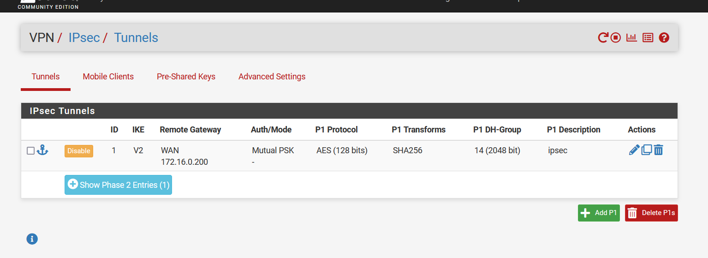
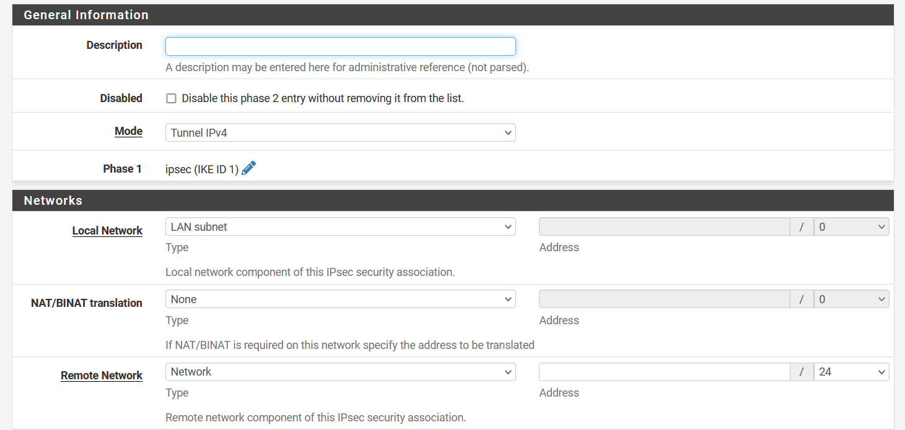
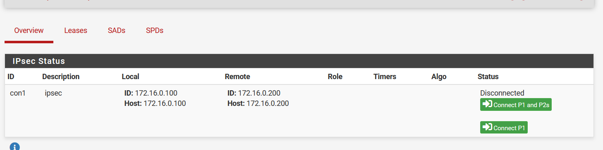
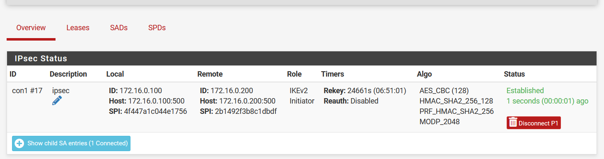

IPSec
Dans l'interface, aller dans VPN > IPSec

Phase 1
Cliquer sur Add P1.

Entrer une description et mettre l'IP de l'interface WAN de l'autre pfSense dans Remote gateway.

Descendre tout en bas de la page et cliquer sur Save.

Phase 2
Cliquer sur Show Phase 2 Entries.

Cliquer sur Add P2.

Entrer une description et mettre l'IP du réseau lan distant dans remote network.

Choisir le chiffrage souhaité.

Descendre en bas de la page et cliquer sur save.
Test
Aller dans Status > IPSec

Voir si le tunnel est fonctionnel, sinon cliquer sur Connect P1 and P2s.


P.S: Si ne fonctionne pas, tenter de mettre la gateway sur l'interface WAN.